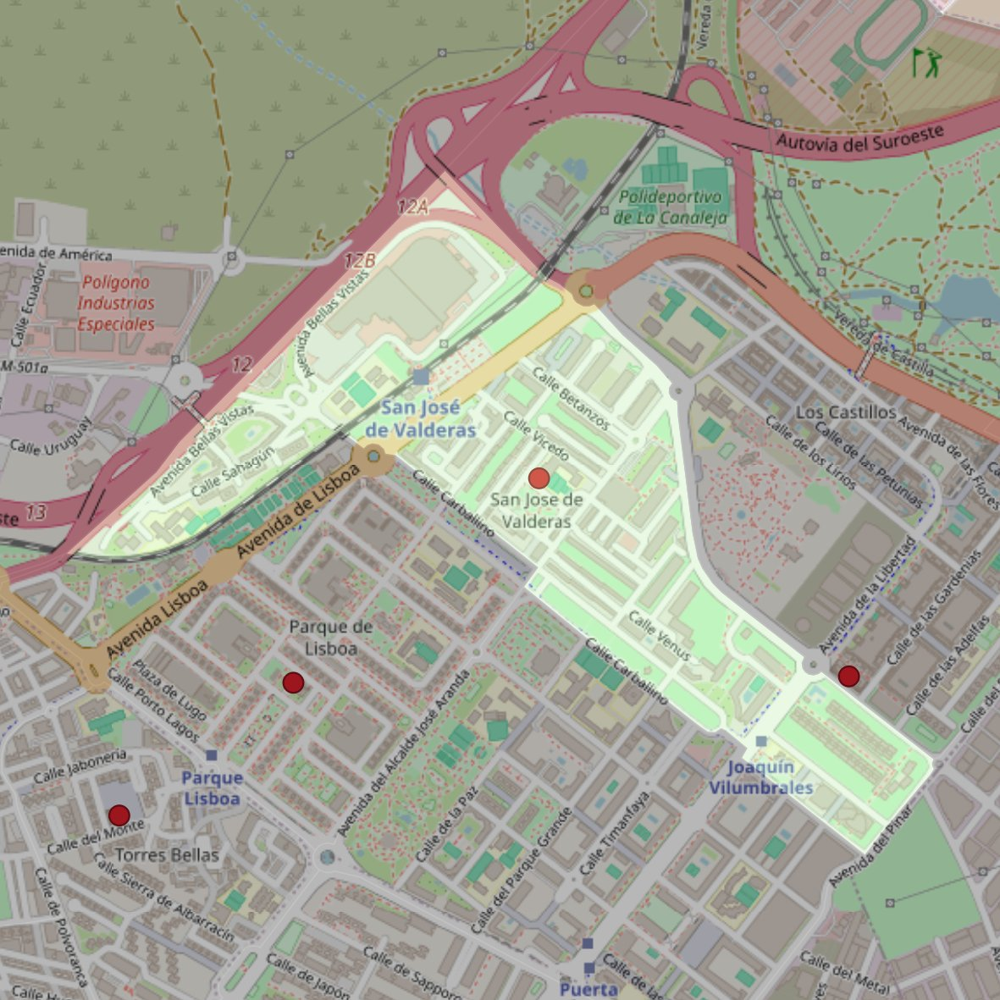

San Juan de Mata

- Arciprestazgo
- Alcorcón
- Población
- Alcorcón
- Dirección postal
- c/ Ribadavia, 2
- Código postal
- 28925
- Extensión
- 0,70 km² (70 ha)
- Teléfono
- 916 441 469
Límites territoriales según el decreto
"Partiendo de la confluencia de la avenida Lisboa con la avenida Los Castillos, arrancan por el eje de la avenida Los Castillos (en dirección sureste); siguen por el eje de la avenida El Pinar (en dirección suroeste), por el eje de la calle Parque Ordesa (en dirección noroeste), por el eje de la avenida La Libertad (en dirección noreste), por el eje de la calle Carballino (en dirección noroeste), por una línea recta imaginaria hasta las vías del ferrocarril Madrid-Móstoles (C-5, en dirección noroeste), por el eje de las vías del ferrocarril (en dirección suroeste), por el eje de la avenida Móstoles (en dirección noreste), por el eje de la autovía de Extremadura (A-5, en dirección noreste), por el eje de la avenida Los Castillos (en dirección sureste) hasta el encuentro con la avenida Lisboa, punto de partida". (Decreto e actualización de límites del 21-6-2005. B.O. de julio-agosto de 2005, pág. 789)